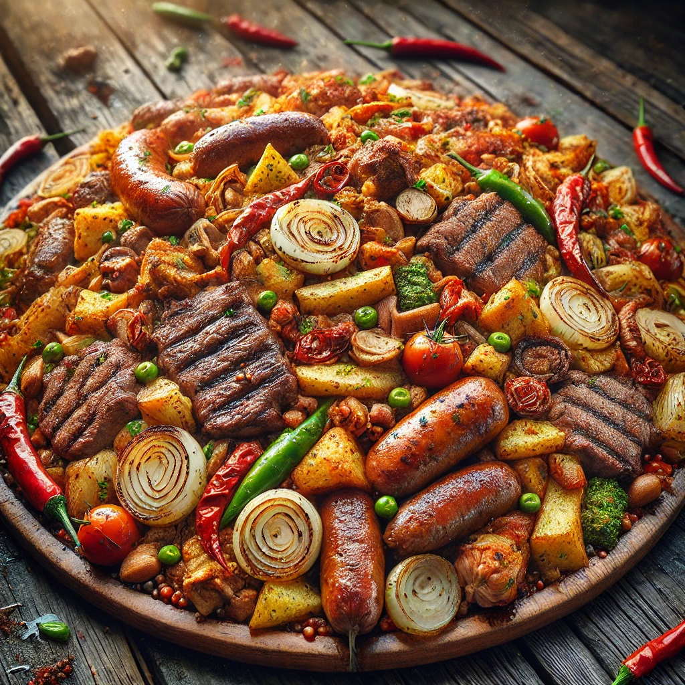
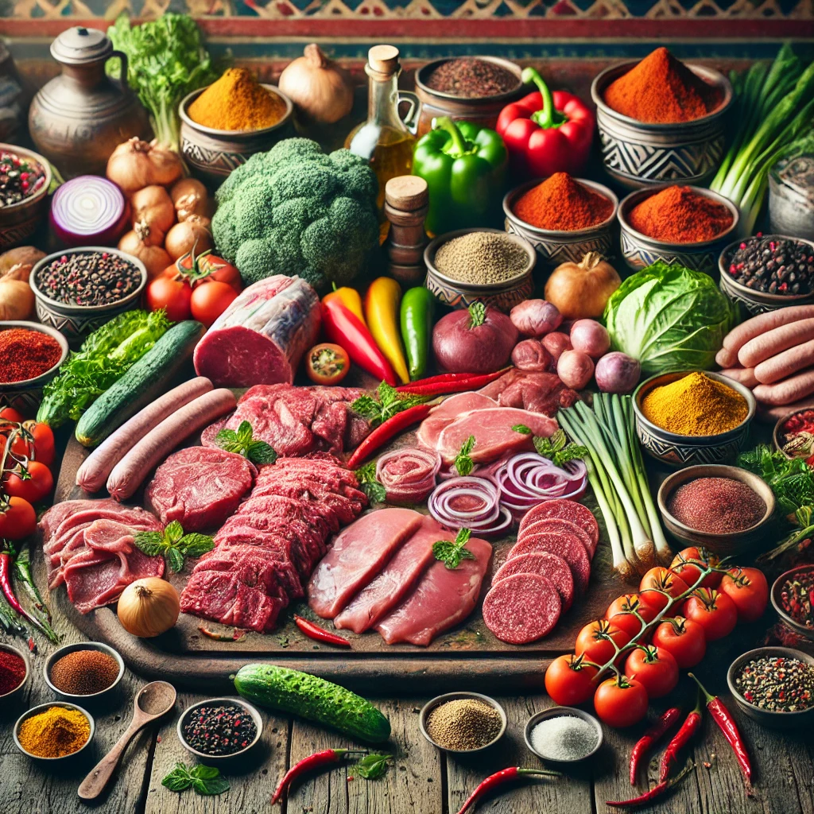

Home
Zimbabwean-Gango

Description
Gango is a traditional Zimbabwean dish that involves grilling a mixture
of meats (beef, pork, chicken, liver, gizzards and sausages) and sometimes vegetables
in a large frying pan or over a fire. It's often enjoyed as a social meal
with friends and family. The word "Gango" reflects the idea of mixing and
bringing people together.
The Gango dish, as prepared in Zimbabwe, is primarily a local specialty, but similar styles of
communal meat dishes are also enjoyed in neighboring countries like South Africa, Namibia, Botswana and Zambia.
Ingredients

- beef
- pork
- chicken
- sausages
- unions
- tomatoes
- green peppers
- spices
- chilli powder
- curry
- liver
- cooking oil
Steps
- Prepare Ingredients: Wash and cut meats into small pieces; chop onions, tomatoes, and green peppers.
- Heat Pan: Add cooking oil to a large frying pan or grill over medium-high heat.
- Cook Tougher Meats: Start with beef and cook until browned.
- Add Softer Meats: Add chicken, liver and sausages; cook until all meats are fully browned.
- Add Vegetables: Stir in onions, tomatoes, and green peppers; cook until softened.
- Season: Add curry powder, chili, garlic, and salt; mix thoroughly.
- Simmer: Reduce heat and simmer for 5-10 minutes to blend flavors.
- Serve: Enjoy hot with Sadza or bread.